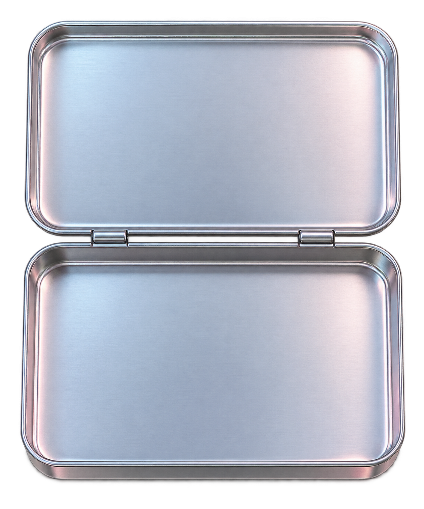

Ana Célia Amaral
código, dados & design
- Curso
- Engenharia de Software
- Instituição
- Inteli
- Entre
- Código, dados & design

Um arquivo de projetos, descobertas
e coisas que gosto de construir.
código, dados & design
um lugar para guardar
o que me move.
Nenhum projeto salvo ainda. Use o coração de um case para guardá-lo aqui.

Projeto realizado · Pesquisa científica premiada
Automação e controle de qualidade na produção de azulejos sustentáveis à base de fibra de coco.
Em desenvolvimento
Módulo de reconhecimento visual de problemas agrícolas, com operação offline prevista para apoiar produtores no campo.
Projeto acadêmico · Entregas desenvolvidas
Plataforma georreferenciada para cadastro, acompanhamento e priorização de atendimentos a famílias em áreas de risco.
Projeto acadêmico · Modelagem preditiva
Estudo de modelos preditivos para produção animal e demanda por ração, milho e farelo de soja.
Desenvolvimento de produto
Experiência de uma plataforma de operações interfinanceiras para profissionais de uma mesa DI/pernoite.
Em andamento
Estruturação de requisitos, modelagem de dados e desenvolvimento back-end de um sistema em evolução.
Um pouco de lógica, um tanto de criatividade.
Clique em uma stack para explorar.

Desenvolvimento web com tipagem. No GeoRisco, faz parte da stack da plataforma de gestão de áreas de risco.
NO MEU TRABALHOExplorar GeoRisco Santo André aprender, experimentar, construir.Meus projetos de hackathons.
Plataforma de capacitação, tarefas remuneradas e pagamentos com Bitcoin e Lightning Network para mulheres em vulnerabilidade econômica.
Ver projeto completoFechar detalhesMVP integrado, em evolução
Desenvolvido no Hack4Freedom Brasil 2026. Atuei em UX/UI e desenvolvimento front-end, colaborando nas interfaces e na experiência de navegação da solução.
O MVP integra autenticação Nostr e pagamentos Lightning. Persistência completa, testes de segurança e validação com usuárias fazem parte da evolução do projeto.
React, TypeScript, Python, Flask e PostgreSQL.
Ver demonstração do Stark Ver repositório Conversar sobre o projetoProtótipo acessível e gamificado de comunicação, com jornadas para crianças, responsáveis e profissionais.
Ver projeto completoFechar detalhesProtótipo navegável
Desenvolvido no Youth Challenge Blockchain 2026. O protótipo navegável apresenta missões gamificadas, telas de consentimento, revisão de amostras, dashboards e captura de áudio quando suportada pelo navegador.
A adaptação de modelos de reconhecimento de fala e a integração com Psyche Network e Solana permanecem propostas técnicas, sem validação de desempenho apresentada.
React, JavaScript, Vite, CSS Modules, MediaRecorder e Speech Synthesis.
Ver demonstração do Ecoa Ver repositório Conversar sobre o projetoSou estudante de Engenharia de Software no Inteli e técnica em Informática. Gosto de conectar criatividade, comunicação, design e programação para transformar ideias em projetos que gerem valor para as pessoas.
Desenvolvimento web, UX/UI e Inteligência Artificial fazem parte dessa curiosidade.
Conheça meu GitHubInteli — Instituto de Tecnologia e Liderança
Fundação Matias Machline
Uma pasta para guardar as comunidades de que faço parte.
 Inteli BlockchainMembro da comunidade de blockchain do Inteli.
Abrir pastaFechar pasta
Inteli BlockchainMembro da comunidade de blockchain do Inteli.
Abrir pastaFechar pasta
Plataforma de operações interfinanceiras para profissionais de uma mesa DI/pernoite.
Minha contribuição: UX/UI, prototipação e front-end: definição de fluxos, wireframes e componentes para ofertas, posições e acompanhamento de operações.
Resultados e estágio: Fluxos, protótipos e estruturas de interface produzidos para apoiar as operações previstas.
Ferramentas: Figma, React, Next.js, TypeScript, Node.js e integrações Web3.
Conversar sobre o projeto Code ClubAprendizado em tecnologia e programação para jovens.
Abrir pastaFechar pasta
Code ClubAprendizado em tecnologia e programação para jovens.
Abrir pastaFechar pasta
Os projetos deste clube serão reunidos aqui.
 GraceHopperFortalecimento da participação feminina na comunidade tech.
Abrir pastaFechar pasta
GraceHopperFortalecimento da participação feminina na comunidade tech.
Abrir pastaFechar pasta
Engenharia de requisitos, modelagem de dados e desenvolvimento back-end.
Minha contribuição: Organização das funcionalidades, definição do modelo de persistência e transformação das necessidades do sistema em componentes técnicos.
Resultados e estágio: Projeto em desenvolvimento, com foco na estruturação de requisitos e organização da arquitetura de software.
Conversar sobre o projetoOs projetos deste clube serão reunidos aqui.